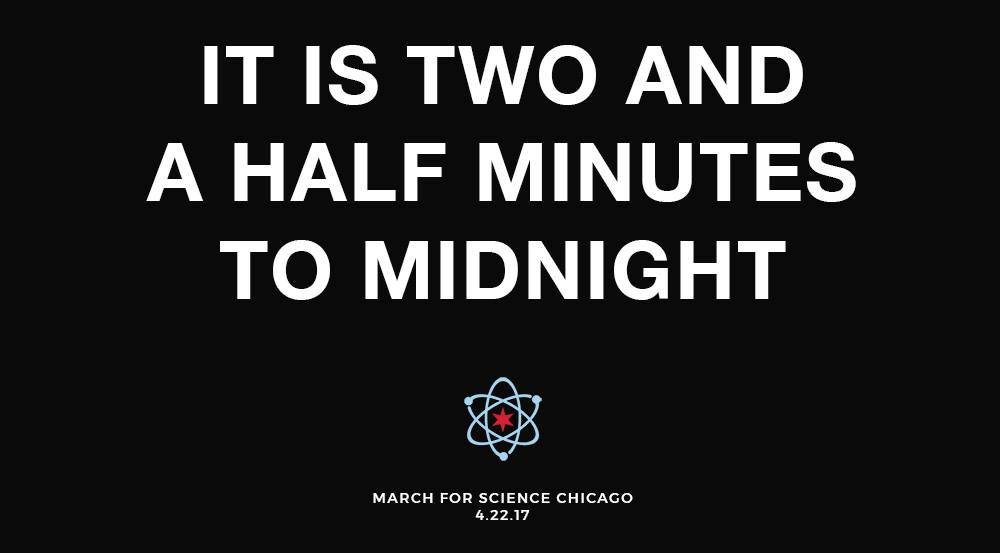

Upcoming Events
General Marshal Training - March for Science Chicago
- Date: Monday, April 17th
- Time: 6:00 PM – 8:00 PM
-
Location: SEIU Healthcare
2229 South Halsted Street
Marshals direct attendees, answer questions, and generally ensure that we work amicably with the other people and groups using that part of the city. It take a lot of people to meet these needs and we can't wait to have you on board.
Please register on Eventbrite.
General Marshal Training - March for Science Chicago
- Date: Wednesday, April 19th
- Time: 6:00 PM – 8:00 PM
-
Location: SEIU Healthcare
2229 South Halsted Street
Marshals direct attendees, answer questions, and generally ensure that we work amicably with the other people and groups using that part of the city. It take a lot of people to meet these needs and we can't wait to have you on board.
Please register on Eventbrite.
General Marshal Training - March for Science Chicago
- Date: Thursday, April 20th
- Time: 6:00 PM – 8:00 PM
-
Location: Worker’s United Lincoln Room
333 S. Ashland
Marshals direct attendees, answer questions, and generally ensure that we work amicably with the other people and groups using that part of the city. It take a lot of people to meet these needs and we can't wait to have you on board.
Please register on Eventbrite.

The Bulletin of the Atomic Scientists: Fireside Chat with MFSChi
- Date: Tuesday, April 18th
- Time: 6:30 PM – 8:00 PM
-
Location: WeWork Kinzie
20 W. Kinzie
The Bulletin of the Atomic Scientists, for the first time in its 70 year history, moved the Doomsday Clock thirty seconds forward.
IT IS NOW TWO AND A HALF MINUTES TO MIDNIGHT.
March for Science Chicago hosts The Bulletin of the Atomic Scientists' Executive Director and Publisher, Rachel Bronson; Danial Holz, Associate Professor in Physics, Astronomy & Astrophysics, the Enrico Fermi Institute, and the Kavli Institute for Cosmological Physics, at the University of Chicago; and Sonny Garg, Energy Solutions Lead at Uptake, Henry Crown Leadership Fellow at the Aspen Institute, a guest lecturer at the University of Chicago’s Booth School of Business. We will sit down and discuss the strategy and decisions behind moving the Doomsday Clock.
Thank you Doughnut Vault for providing mini buttermilk doughnuts and Dark Matter Coffee for complementing those with coffee.
Facebook Event page